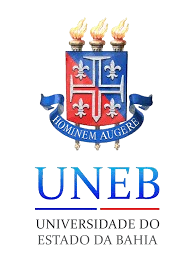

Sua jornada começa com um pequeno brilho.
A JORNADA ECOLÓGICA
O caminho da luz
Escolha uma luz no caminho.

Esse jogo foi feito por estudantes do curso de graduação Engenharia de Software da UNEB
Sua jornada começa com um pequeno brilho.
Escolha uma luz no caminho.